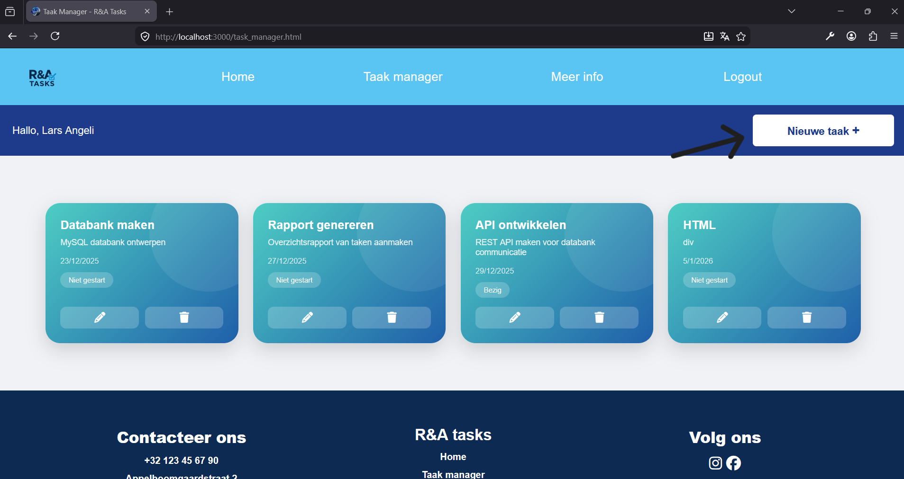
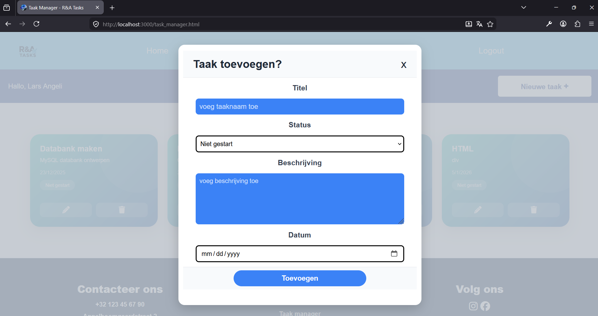
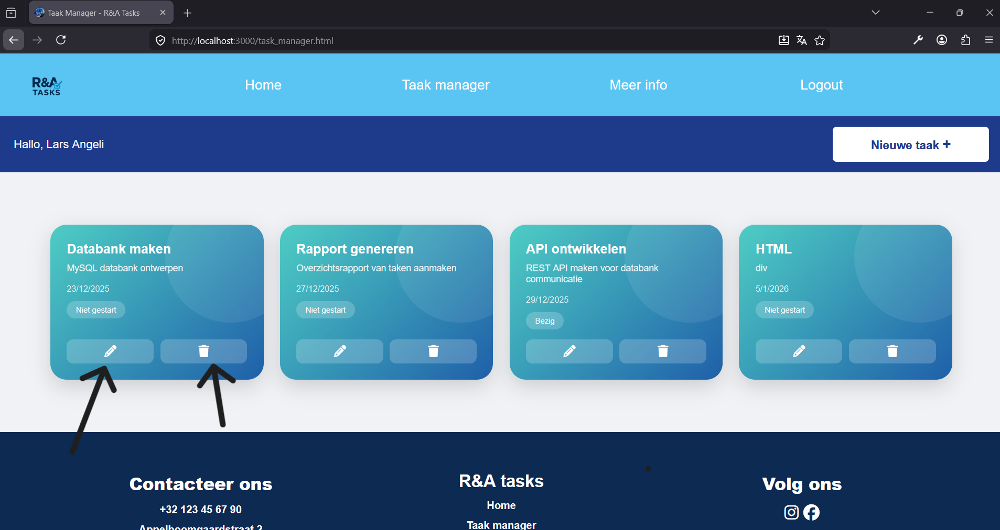
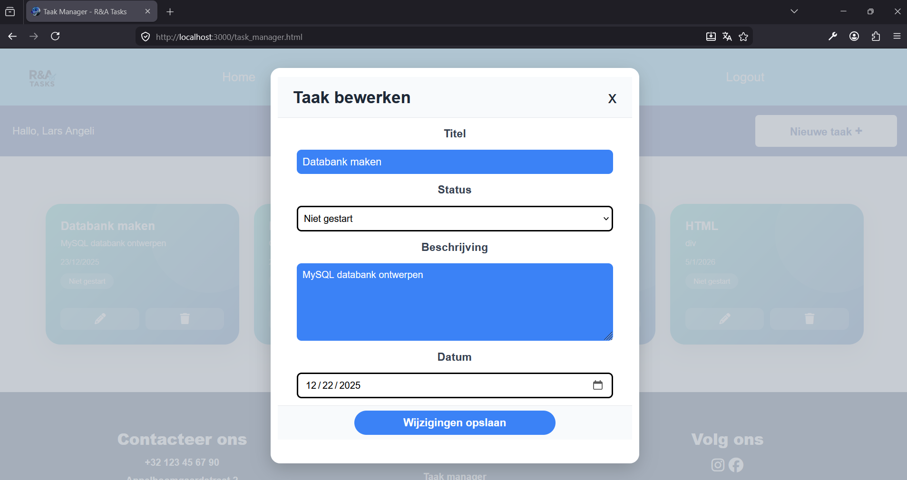

Meer Info
Ontdek stap voor stap hoe R&A Tasks werkt. Van het aanmaken van je account tot het beheren, bewerken en verwijderen van taken.
Voordat je een taak kunt aanmaken, moet je eerst inloggen of een account registreren. Nadat je bent ingelogd kom je terecht op de pagina Taak Manager. Hier zie je een overzicht van al je taken. Heb je nog geen taken? Dan kun je eenvoudig een nieuwe taak toevoegen door op de knop "Nieuwe taak +" te klikken. Op de afbeelding hiernaast zie je waar deze knop zich bevindt. Zodra je erop klikt, verschijnt er een formulier waarmee je een nieuwe taak kunt aanmaken.


In het formulier kun je alle gegevens van je taak invullen. Bovenaan geef je een titel op voor de taak. Daaronder kies je de status van de taak: Niet gestart, Bezig of Afgerond. Vervolgens kun je een beschrijving toevoegen waarin je meer informatie over de taak geeft. Dit veld is optioneel. Het kiezen van een datum is wel verplicht. Hiermee geef je aan tegen wanneer de taak afgerond moet zijn. Ben je klaar met invullen? Klik dan op "Taak toevoegen". Wil je toch geen taak aanmaken, dan kun je het formulier sluiten met het kruisje rechtsboven.
Nadat je taken hebt toegevoegd, verschijnen ze overzichtelijk in taakkaarten. In elke kaart zie je alle informatie die je hebt ingevuld. Daarnaast staan er twee knoppen bij iedere taak. Met de knop met het prullenbak-icoon kun je een taak verwijderen. Wanneer je hierop klikt, verschijnt er eerst een bevestigingsvenster zodat je niet per ongeluk een taak verwijdert. Je kunt vervolgens kiezen voor Verwijderen of Annuleren.


Met de knop met het potlood-icoon kun je een bestaande taak bewerken. Het formulier dat opent lijkt op het formulier voor het aanmaken van een taak, maar alle gegevens zijn al ingevuld. Je kunt de titel, status, beschrijving en einddatum aanpassen. Wanneer je klaar bent met wijzigen, klik je op "Wijzigingen opslaan". Wil je geen wijzigingen bewaren, dan kun je het formulier sluiten met het kruisje rechtsboven.